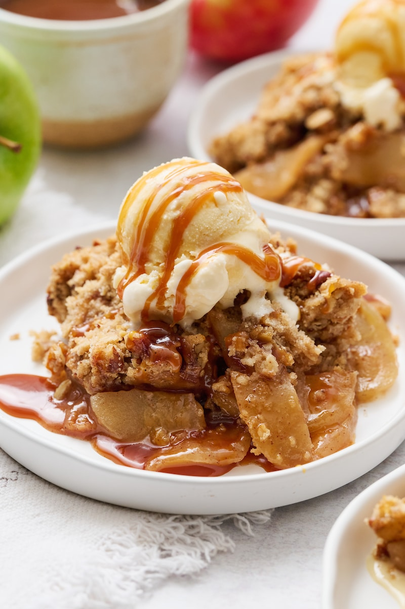

Apple Crisps
Step 1: Preheat oven to 375°.
Step 2: Place apples in a large bow and combine sugar and 1/2 teaspoon cinnamon.
Step 3: Sprinkle over apples and toss to coat.
Step 4: Transfer to a greased 13x9-inch baking dish.
Step 5: Combine flour, brown sugar, oats, baking powder, nutmeg and remaining 1/2 teaspoon cinnamon.
Step 6: Cut in butter until mixture resembles coarse crumbs.
Step 7: Sprinkle over apples, then bake until apples are tender for 50-60 minutes.
Step 8: Serve warm, with vanilla ice cream if desired.
